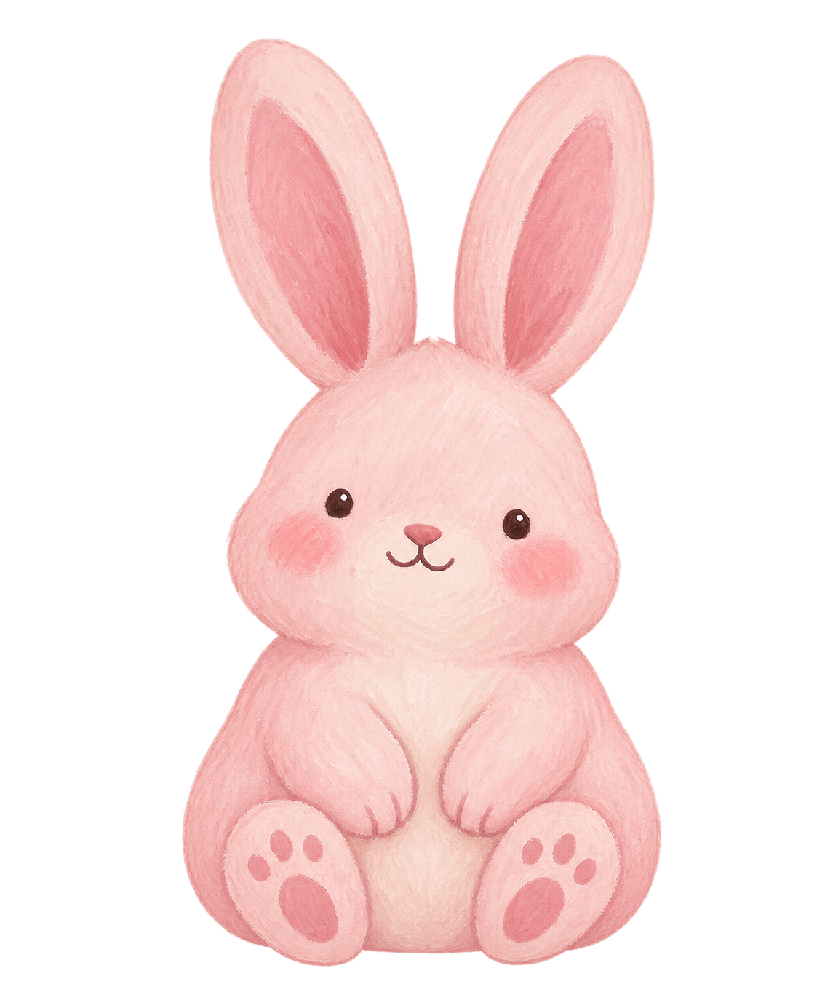

YOUR COSY FOCUS CORNER0 bunnies in your burrow
Focus time
Small steps.
Happy little hops.
Settle in. Your bunny grows while you focus.
25:00
25 min focus · then a 5 min breather

MEET ROSIE
Little beginnings
A little focus goes a long way.
01
Pick your companion
02
Find your rhythm
/
Adjust before starting a session.
03
Make it cosy
Your little burrow
Finish a focus session to welcome your first bunny.
Preparing offline mode…
Background playback depends on your browser. Fully closing the app stops sound; your timer is saved.
How background focus works
Start your session before switching apps. Some browsers keep sound playing with the screen locked; others pause it. Lock-screen playback controls appear where supported.
If you fully close the app, audio and timed bells stop. Your session is saved, and the timer and bunny growth catch up when you reopen it. Offline mode saves the app’s files—it does not grant permission to run after closure.
Tap a preview button to try each sound.